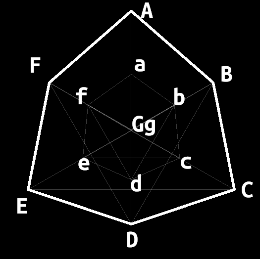
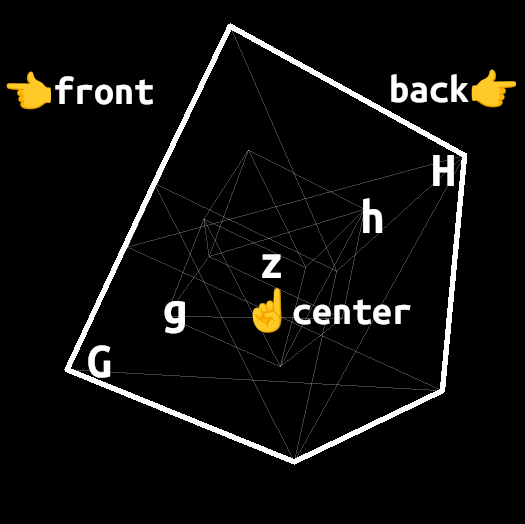

Back to Index
新たなOverClockグリフを作りたい場合、次を参考にしてください。
URL例
https://reirei0000.github.io/overclock_glyph/html/overclock.html?d=ABC_abc&n=グリフ名
パラメータ d座標に対応する文字を並べて線を書きます。複数線を書きたい場合、アンダースコアで区切ってください。
パラメータ nグリフの名前を表示します
座標の対応は次の図を参考にしてください
正面

少し回転させた時
